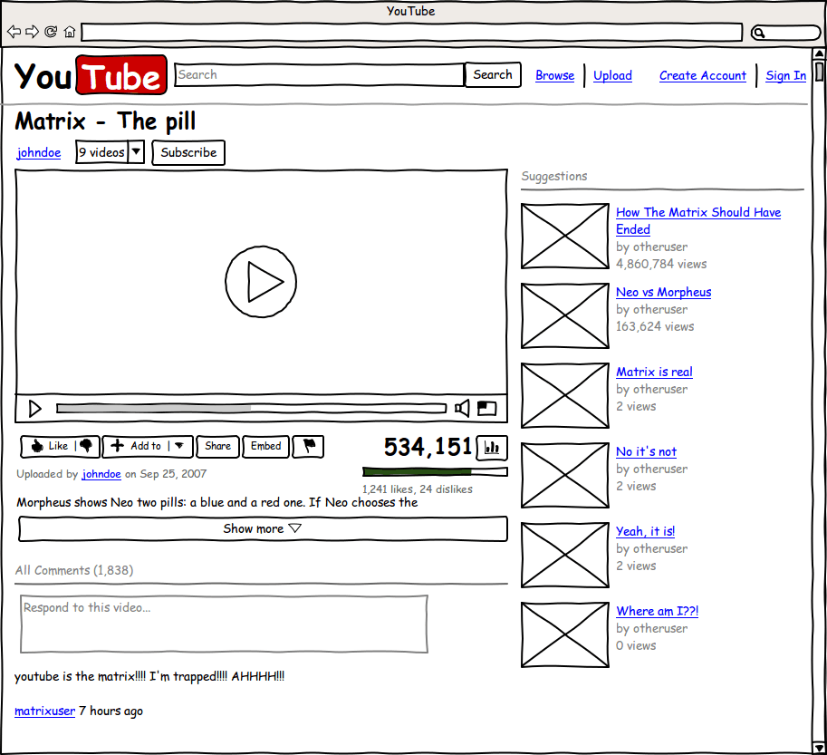

Informationsarkitektur
Website kan indeholde enorme mængder af information, og for brugervenlighedens skyld, er det nødvendigt at have styr på informationsarkitekturen. Der skal opbygges et indholdshierarki, og der skal opbygges et hierarki af menuer og dertilhørende sider på en sådan måde, at brugeren finder navigering på websitet naturligt og uden momenter af frustration. Efter lang tids brug af webbet, har mennesker en forventning til, hvordan et nyt website fungerer, og det nye website, skal helst efterleve disse forventninger.
Som det første skal alt indhold på siden nedfældes, og det gælder alt fra URL’en til indhold og fra søgeord til den vedligeholdelsesansvarlige. Disse informationer er det helt grundlæggende for arbejdet med informationsarkitektur, og først efter fastlæggelsen af disse, kan kategoriseringen af indholdet påbegyndes. Der findes 5 grundlæggende kategorier for kategorisering af indhold, og konceptet går under betegnelsen de fem hattehylder.
- Kategori: indholdet organiseres efter fællestræk.
- Tid: indholdet organiseres efter en tidslinje.
- Lokation: indholdet organiseres efter en fysisk eller geografisk placering.
- Alfabetisk: indholdet organiseres efter alfabetisk rangorden.
- Kontinuum: indholdet organiseres i en sammenhængende række – for eksempel efter pris eller størrelse.
Website-strukturer
Det er ikke uden grund, at mennesker har en forventning til, hvordan et website skal fungere. Der findes nemlig tre overordnede strukturer, der benyttes på mange forskellige websites.
- Sekvens
- Det er den mest enkle af de tre strukturer. Den angiver et lineært handlingsforløb, fordi den begrænser brugerens mulighed for at fortryde eller gå tilbage. Det er en let forståelig struktur.
- Hierarki
- Hierarki er den struktur, der hyppigst anvendes på websites i dag, fordi den er god til organisering af meget indhold. Den består af nogle overordnede kategorier eller subsites, og herefter følger underkategorier og indhold, der matcher de overordnede kategorier.
- Webstruktur
- Denne struktur er ikke så anvendt. Den giver brugeren stor bevægelsesfrihed, og det skal være muligt for brugeren at følge sine interesser på siden uden begrænsninger. Ulempen er dog, at det er en opbygning, der er svær at forstå.
Visualisering af arkitekturen
Når alt det visuelle indhold på siden er fastlæg, kan man begynde at lave en wireframe. En wireframe er en forenklet skitsering af, hvordan websitet skal se ud, og den kan derfor betegnes som skelettet af et website. Efter udviklingen af wireframen, kan den testes på brugere, så det er muligt for udviklerne at se, om websitet lever op til brugernes forventninger.
Navigeringsdesign
Navigering handler om at komme fra punkt A til punkt B, og det er ikke nødvendigvis i fysisk form. Det kan nemlig også dreje sig om brugeres navigering på et website. Selvfølgelig afhængigt af sidens opbygning er det for det meste let at finde rundt på et website, hvis det indeholder global navigering, der beskriver de forskellige elementer under navigeringen. Den skal indeholde:
- Et site-ID, altså noget, der kendetegner websitet
- Primære navigering, der er en række af links til websitets overordnede sider
- Utilities, der er links til vigtig information på siden
- Søgning skal helst være muligt – især på indholdsrige websites
Derudover er der andre skjulte krav til navigering på et website. Det kan eksempelvis være en fordel, hvis der på siden er breadcrumbs, så brugeren altid ved, hvor han eller hun befinder sig.